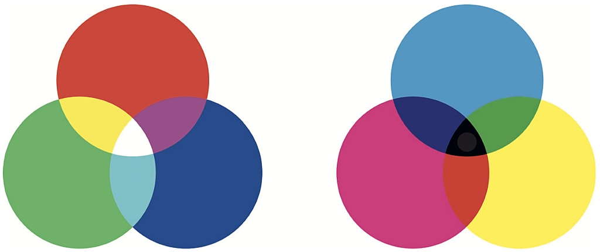

Kleur is een fundamenteel aspect van ons dagelijks leven en speelt een cruciale rol in kunst, design, technologie en wetenschap. Om kleuren te begrijpen en effectief te kunnen manipuleren, maken we gebruik van kleurmodellen. Kleurmodellen zijn systemen waarmee we kleuren kunnen definiëren, weergeven en communiceren. Er zijn verschillende kleurmodellen in gebruik, maar de meest voorkomende zijn het RGB-model, het CMYK-model en het HSL/HSV-model.
Het RGB-model is wijdverbreid in digitale displays, zoals computerschermen en televisies. Hierin worden kleuren gemaakt door verschillende hoeveelheden rood, groen en blauw licht te combineren. Elke kleur wordt weergegeven door drie waarden die de intensiteit van elk van deze primaire kleuren aangeven. Dit model is additief, wat betekent dat het mengen van de maximale hoeveelheden van elk van de drie kleuren resulteert in wit licht.
Het CMYK-model wordt vooral gebruikt in drukwerk, zoals brochures en tijdschriften. Hier worden kleuren gecreëerd door de percentages cyaan, magenta, geel en zwart (de K staat voor Key, wat zwart betekent) inkt te mengen. Dit model is subtractief, wat betekent dat het toevoegen van meer inkt de kleur donkerder maakt en uiteindelijk resulteert in zwart.
Het HSL-model en het HSV-model richten zich meer op de perceptuele aspecten van kleur. Ze bieden controle over de tint (kleur), verzadiging (intensiteit) en lichtheid (helderheid of waarde) van een kleur. Dit maakt het gemakkelijker om kleuren te begrijpen en aan te passen op basis van menselijke waarneming. Bijvoorbeeld, in dit model kun je gemakkelijk kleuren lichter of donkerder maken zonder de tint te veranderen. Kleurmodellen zijn essentieel voor grafisch ontwerpers, kunstenaars, fotografen en webontwikkelaars, omdat ze helpen bij het maken, beheren en reproduceren van kleuren met precisie. Bij het werken met digitale media of drukwerk is het begrip van kleurmodellen van onschatbare waarde om de gewenste resultaten te bereiken en consistentie te handhaven in verschillende apparaten en platforms. Het juiste kleurmodel kiezen voor een specifieke toepassing is een belangrijk aspect van het creëren van visueel aantrekkelijke en effectieve ontwerpen.